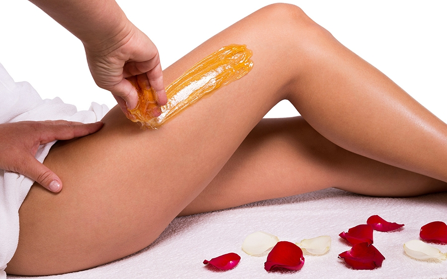

Восковая депиляция (ваксинг) – один из эффективных методов удаления волос на срок до трех недель. Благодаря нашим мастерам процедура проходит быстро и безболезненно, не вызывает каких – либо побочных эффектов и проходит в максимально комфортной обстановке в нашей студии. Кто делает восковую депиляцию впервые, опасаются неприятных ощущений и ожогов. На самом деле благодаря использованию современных косметических средств и технике работы мастеров, процедура считается полностью безопасной для женщин с любым типом волос. А что бы ваша кожа оставалась идеальной всегда – следуйте рекомендациям вашего мастера.
